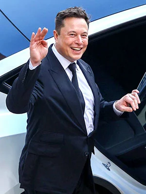
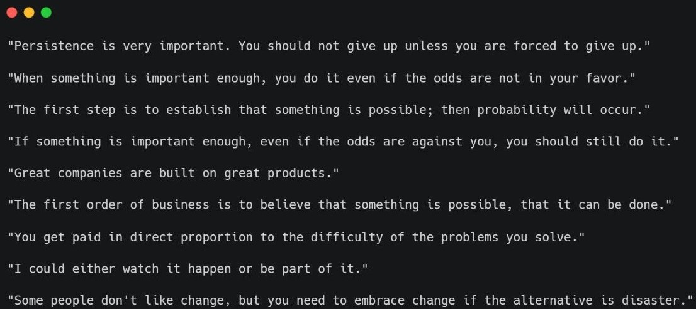
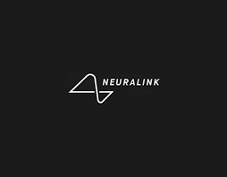
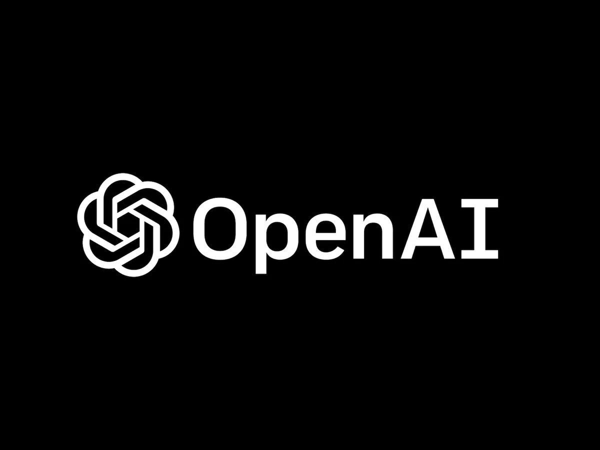

Biography
Elon Reeve Musk, born on June 28, 1971, in Pretoria, South Africa, is a business magnate, investor, and engineer known for his groundbreaking ventures in the fields of technology, transportation, and space exploration. Musk's relentless drive, visionary thinking, and ambitious goals have made him one of the most influential and talked-about figures of our time.

Early Life and Education
Elon Musk was born to a Canadian mother, Maye Musk, and a South African father, Errol Musk. From an early age, he displayed a keen interest in technology and entrepreneurship. As a child, Musk was an avid reader, immersing himself in science fiction and exploring various scientific topics. He spent two years at the Queen's School of Business in Kingston, Ontario. He then transferred to the University of Pennsylvania where he earned a bachelor's degree in economics from the Wharton School. He stayed a year to finish his second bachelor's degree in physics. Then he moved to California to attempt to get a PhD in applied physics at Stanford but he left the program after only two days because he wanted to pursue his entrepreneurial aspirations (start businesses) in the Internet, renewable energy and outer space. He became an American citizen in 2002.

Famous Qoutes by Elon Musk
Achievements and Awards
- Musk received this award in 2007 in recognition of his achievements as a visionary entrepreneur and his role in co-founding Tesla Motors and SpaceX.
- Musk was awarded this prestigious prize in 2008 for his leadership and contributions to the commercial space industry.
- In 2012, Musk was awarded the Gold Medal by the Royal Aeronautical Society for his exceptional contributions to the advancement of space exploration and his work with SpaceX.
- In 2013, Musk was named Automotive Executive of the Year by Automotive News, recognizing his transformative role in the electric vehicle industry and his leadership at Tesla.
- Musk was honored with this prize for the second time in 2014, acknowledging his ongoing efforts and achievements in the commercial space industry.
- In 2019, Musk was named Philanthropist of the Year by the nonprofit organization Giving Pledge for his significant philanthropic contributions, including initiatives to support renewable energy, education, and global issues.
- Musk received the Axel Springer Award in 2020, recognizing his entrepreneurial vision and his dedication to transforming multiple industries with innovative technologies.
Projects and Companies


